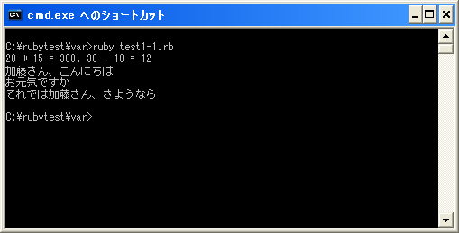

変数への代入
文字列や数値などのオブジェクトを作成した時、そのオブジェクトに名札を付けることが出来ます。この名札のことを変数といいます。
他のプログラミング言語では、変数は値を格納するための入れ物として使われる場合があります。入れ物だった場合は変数自体にオブジェクトのコピーが格納されることになります。ただRubyの変数は入れ物ではなく名札です。どこかに存在しているオブジェクトに対する目印です。変数自体にオブジェクトをコピーして格納するようなことはありません。
※例外もあり、整数を表すFixnumクラスのオブジェクトと、Symbol、そしてnil/true/falseなどは即値と呼ばれるもので実際の値が変数に格納されます。また同じ数値を表わすFixnumクラスのオブジェクトは常に同じです。取りあえずここでは例外があるとだけ覚えておいて下さい。
変数は名札でしかありませんので名札自体にデータ型のようなものは存在しません。そのため、どのようなオブジェクトに対する変数も同じ扱いとなります。(オブジェクト自身は元になっているクラスが色々とありますので、どのクラスのオブジェクトなのかという区別はあります)。
ではオブジェクトに対して変数を名札として付ける方法を確認します。書式は次のようになっています。
変数名 = オブジェクト
「=」は代入演算子と呼ばれ右辺のオブジェクトを左辺の変数に代入します。これを変数にオブジェクトを代入するといいます。また右辺に式が記述されていれば式が評価された結果のオブジェクトが右辺に代入されます。
例えば次のように使用します。
num = 10 str = "Hello"
上記では変数「num」に数値オブジェクトの「10」を代入しています。また変数「str」に文字列オブジェクトの「Hello」を代入しています。
変数の宣言と参照
変数に対して最初にオブジェクトを代入すると変数を宣言したことになります。変数が宣言されれば、それ以降で変数に代入されたオブジェクトを参照することが出来ます。
文字列オブジェクトや数値オブジェクトを記述していた箇所に変数を記述すると、変数に代入されているオブジェクトが参照されてオブジェクトが記述されているように処理されます。
次の例で考えてみます。
print("20 * 15 = ", 20 * 15, ", 30 - 18 = ", 30 - 18, "¥n")
これを変数を使って書き直してみます。
calc1 = 20 * 15
calc2 = 30 - 18
print("20 * 15 = ", calc1, ", 30 - 18 = ", calc2, "¥n")
この例では数値の演算によって新しく作成されたオブジェクトが変数に代入されます。そして「print」メソッドの引数に変数を記述しています。この時変数に代入されたオブジェクトがあたかも記述されているように処理されます。
次の例では複数の箇所で同じオブジェクトが使用されている例です。
name = "加藤"
print(name + さん、こんにちは¥n")
print("お元気ですか¥n")
print("それでは" + name + "さん、さようなら¥n")
オブジェクトをそのままプログラムの中に記述する代わりにオブジェクトを代入した変数を記述していいます。結果的には同じことなのですが変数を利用することでプログラムの修正が楽になります。例えば名前を「加藤」から「伊藤」に変更する場合、変数「name」に代入するオブジェクトを変更すればプログラムの他の部分は変更する必要がありません。
name = "伊藤"
print(name + さん、こんにちは¥n")
print("お元気ですか¥n")
print("それでは" + name + "さん、さようなら¥n")
このように変数を上手に使うことでプログラムが再利用しやすく、可読性にも優れ、修正も簡単にすることが出来ます。
なおオブジェクトが代入されていない変数をプログラムの中で記述して参照しようとすると「undefined local variable or method」と言うエラーになります。
サンプルプログラム
では簡単なプログラムで確認して見ます。
#! ruby -Ku
require "kconv"
calc1 = 20 * 15
calc2 = 30 - 18
print("20 * 15 = ", calc1, ", 30 - 18 = ", calc2, "¥n")
name = "加藤"
print(Kconv.tosjis(name + "さん、こんにちは¥n"))
print(Kconv.tosjis("お元気ですか¥n"))
print(Kconv.tosjis("それでは" + name + "さん、さようなら¥n"))
上記のプログラムを「test1-1.rb」として保存します。文字コードはUTF-8です。そして下記のように実行して下さい。

( Written by Tatsuo Ikura )

著者 / TATSUO IKURA
初心者～中級者の方を対象としたプログラミング方法や開発環境の構築の解説を行うサイトの運営を行っています。